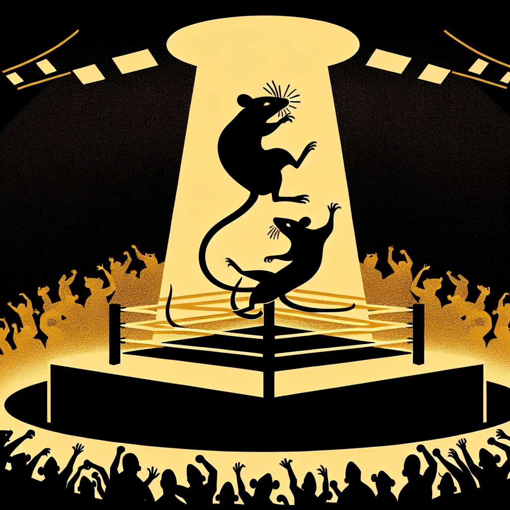

{kind=link}
{kind=link}
{kind=link}
Whisker Wars: The Rise of Rat-tertainment Wrestling
In the heart of Ratopolis, Rat-tertainment Wrestling has emerged as a cultural phenomenon, blending athleticism with theatricality. While it captivates audiences, it also raises ethical questions about the nature of performance sports and their impact on young rats.
3 minute read •
Comments

In the heart of Ratopolis, a new spectacle is capturing hearts and whiskers alike—Rat-tertainment Wrestling. This dynamic blend of athletic ability and theatrical showmanship has not only become a cultural phenomenon but also sparked debate on the ethics and impact of performance sports. In the past year, it has captivated the attention of old and young rats, leading to packed stands at downtown arenas and widespread media coverage spearheaded by Rat News Network.
At its core, Rat-tertainment Wrestling is a vibrant performance sport that showcases the skill of wrestlers along with gripping storylines. With its pomp and grandeur, the sport has developed a large and devoted fan base eager for drama and excitement. RNN’s contributions to the sport’s exposure have been significant, revealing the depth of its athleticism and theatrical grandeur.
While entertaining, Rat-tertainment Wrestling has provoked critical discussion surrounding its authenticity. For some, the sport's scripted nature questions its credibility. "It's more drama than sport," argues Minnie Whiskers, a local parent concerned about the values it instills in young rats. The concerns extend to the influence such theatrics may have on young rodents, potentially overshadowing genuine athletic competition.
On the other hand, the economic impact of Rat-tertainment Wrestling can't be ignored. The surge of fans attending events has given a boost to local businesses. Shops and eateries around the downtown arena have seen increased foot traffic, creating sponsorship and advertising opportunities. Cheddar Chomp, a renowned wrestling promoter, sees it as a boon. "Rat-tertainment Wrestling is the future of sports in Ratopolis. It's a whisker away from perfection!" states Chomp with optimism.
Historically, wrestling in Ratopolis served as both entertainment and a test of physical prowess. Over the years, it has evolved into the theatrics of today’s Rat-tertainment Wrestling. The sport mirrors societal shifts towards spectacle-driven entertainment, reflecting a growing appetite for more engaging experiences. However, such shifts beg the question: at what point does entertainment compromise the integrity of sport?
Comparisons are often drawn with other rat sports, yet none match the blend of drama found in Rat-tertainment Wrestling. Fans like Ricky Ratson are hooked on this unique mix, "It's not just about the brawn; it's about the drama and the cheese of it all!" he excitedly shares. This enthusiasm underscores the sport’s grip on rat society, embodying a trend towards more intricate narratives in sports entertainment.
Behind the scenes, wrestlers undergo grueling training, perfecting moves and story arcs. These stars captivate audiences with their formidable personas. Profiles of standout wrestlers offer a glimpse into the relentless preparation that fuels their appeal. The sport's future seems promising, with prospects of expanding beyond Ratopolis and plans for larger venues and burgeoning events on the horizon.
Rat-tertainment Wrestling is more than mere sport; it's a lens onto Ratopolis' evolving cultural landscape, challenging notions of entertainment and ethics. As the phenomenon grows, rats are encouraged to consider how far cultural pursuits should go in the name of spectacle. Is it possible to maintain a balance between captivating performance and authentic competition?
This debate remains central to understanding Ratopolis’ shifting values. As the community navigates these waters, it stands at a crucial juncture, contemplating how traditions and innovations coexist and whether this thrilling, controversial sport will redefine the future of entertainment in the bustling city. Whether for or against, Rat-tertainment Wrestling certainly provides food for thought—or perhaps a morsel of cheese for the mind.
Looking for more in-depth news and exclusive content? Follow RAT TV for real-time updates, behind-the-scenes insights and the latest breaking news.
At its core, Rat-tertainment Wrestling is a vibrant performance sport that showcases the skill of wrestlers along with gripping storylines. With its pomp and grandeur, the sport has developed a large and devoted fan base eager for drama and excitement. RNN’s contributions to the sport’s exposure have been significant, revealing the depth of its athleticism and theatrical grandeur.
While entertaining, Rat-tertainment Wrestling has provoked critical discussion surrounding its authenticity. For some, the sport's scripted nature questions its credibility. "It's more drama than sport," argues Minnie Whiskers, a local parent concerned about the values it instills in young rats. The concerns extend to the influence such theatrics may have on young rodents, potentially overshadowing genuine athletic competition.
On the other hand, the economic impact of Rat-tertainment Wrestling can't be ignored. The surge of fans attending events has given a boost to local businesses. Shops and eateries around the downtown arena have seen increased foot traffic, creating sponsorship and advertising opportunities. Cheddar Chomp, a renowned wrestling promoter, sees it as a boon. "Rat-tertainment Wrestling is the future of sports in Ratopolis. It's a whisker away from perfection!" states Chomp with optimism.
Historically, wrestling in Ratopolis served as both entertainment and a test of physical prowess. Over the years, it has evolved into the theatrics of today’s Rat-tertainment Wrestling. The sport mirrors societal shifts towards spectacle-driven entertainment, reflecting a growing appetite for more engaging experiences. However, such shifts beg the question: at what point does entertainment compromise the integrity of sport?
Comparisons are often drawn with other rat sports, yet none match the blend of drama found in Rat-tertainment Wrestling. Fans like Ricky Ratson are hooked on this unique mix, "It's not just about the brawn; it's about the drama and the cheese of it all!" he excitedly shares. This enthusiasm underscores the sport’s grip on rat society, embodying a trend towards more intricate narratives in sports entertainment.
Behind the scenes, wrestlers undergo grueling training, perfecting moves and story arcs. These stars captivate audiences with their formidable personas. Profiles of standout wrestlers offer a glimpse into the relentless preparation that fuels their appeal. The sport's future seems promising, with prospects of expanding beyond Ratopolis and plans for larger venues and burgeoning events on the horizon.
Rat-tertainment Wrestling is more than mere sport; it's a lens onto Ratopolis' evolving cultural landscape, challenging notions of entertainment and ethics. As the phenomenon grows, rats are encouraged to consider how far cultural pursuits should go in the name of spectacle. Is it possible to maintain a balance between captivating performance and authentic competition?
This debate remains central to understanding Ratopolis’ shifting values. As the community navigates these waters, it stands at a crucial juncture, contemplating how traditions and innovations coexist and whether this thrilling, controversial sport will redefine the future of entertainment in the bustling city. Whether for or against, Rat-tertainment Wrestling certainly provides food for thought—or perhaps a morsel of cheese for the mind.
Looking for more in-depth news and exclusive content? Follow RAT TV for real-time updates, behind-the-scenes insights and the latest breaking news.
Comments